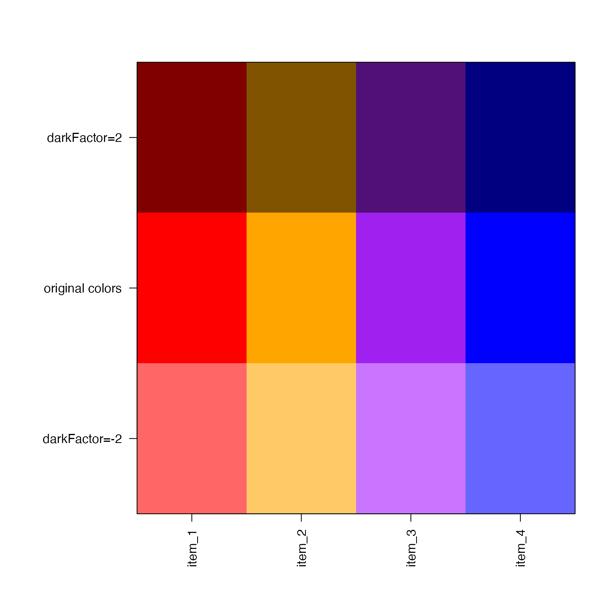
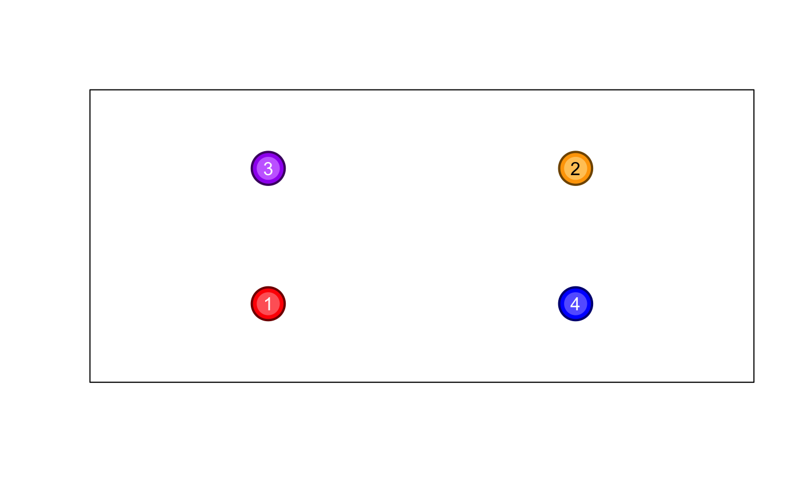

Makes R colors darker or lighter based upon darkFactor
makeColorDarker(
hexColor,
darkFactor = 2,
sFactor = 1,
fixAlpha = NULL,
verbose = FALSE,
keepNA = FALSE,
useMethod = 1,
...
)This function was originally intended to create border colors, or to create slightly darker colors used for labels. It is also useful for for making colors lighter, in adjusting color saturation up or down, or applying alpha transparency during the same step.
Note when colors are brightened beyond value=1, the saturation is gradually reduced in order to produce a visibly lighter color. The saturation minimu is set to 0.2, to maintain at least some amount of color.
Other jam color functions:
alpha2col(),
applyCLrange(),
col2alpha(),
col2hcl(),
col2hsv(),
color2gradient(),
fixYellowHue(),
fixYellow(),
getColorRamp(),
hcl2col(),
hsv2col(),
isColor(),
kable_coloring(),
make_html_styles(),
make_styles(),
rgb2col(),
setCLranges(),
setTextContrastColor(),
showColors(),
unalpha(),
warpRamp()
colorV <- c("red","orange","purple","blue");
colorVdark2 <- makeColorDarker(colorV, darkFactor=2);
colorVlite2 <- makeColorDarker(colorV, darkFactor=-2);
showColors(cexCellnote=0.7,
list(
`darkFactor=2`=colorVdark2,
`original colors`=colorV,
`darkFactor=-2`=colorVlite2
));

# these adjustments work really well inside a network diagram
# when coloring nodes, and providing an outline of comparable
# color.
plot(x=c(1,2,1,2), y=c(1,2,2,1), pch=21,
xaxt="n", yaxt="n", xlab="", ylab="",
xlim=c(0.5,2.5), ylim=c(0.5,2.5),
bg=colorV, col=colorVdark2, cex=4, lwd=2);
points(x=c(1,2,1,2), y=c(1,2,2,1), pch=20, cex=4,
col=colorVlite2);
# Making a color lighter can make it easier to add labels
# The setTextContrastColor() function also helps.
text(x=c(1,2,1,2), y=c(1,2,2,1), 1:4,
col=setTextContrastColor(colorVlite2));
